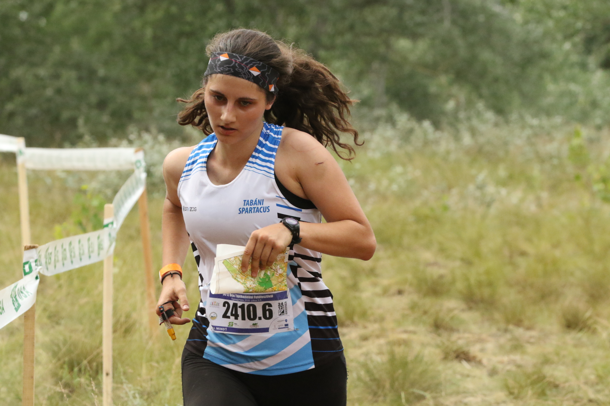
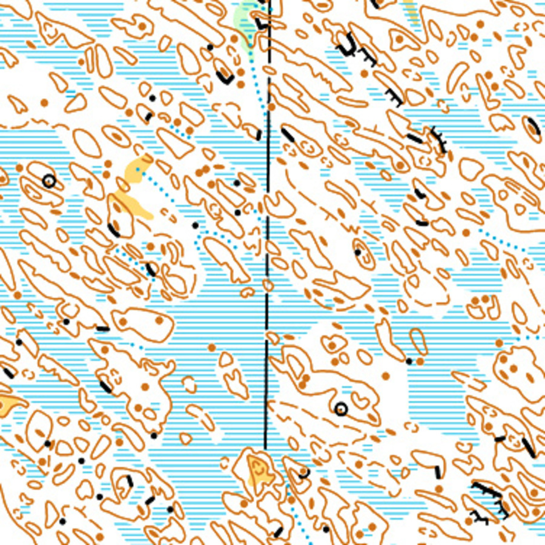
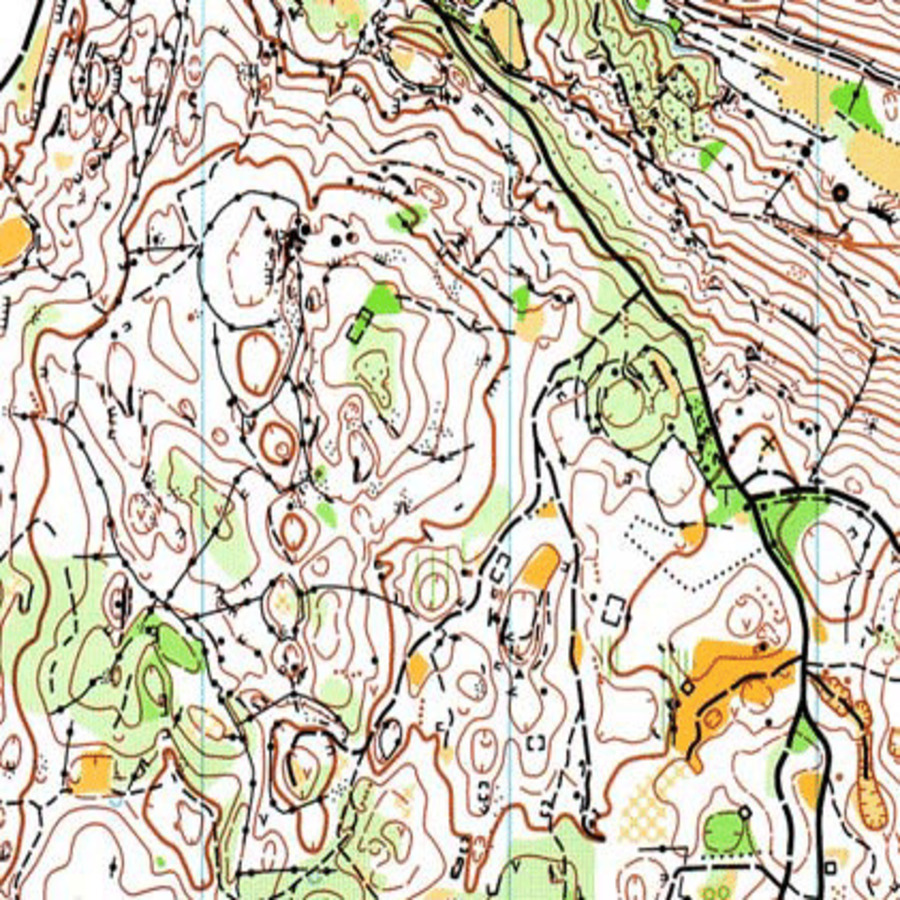
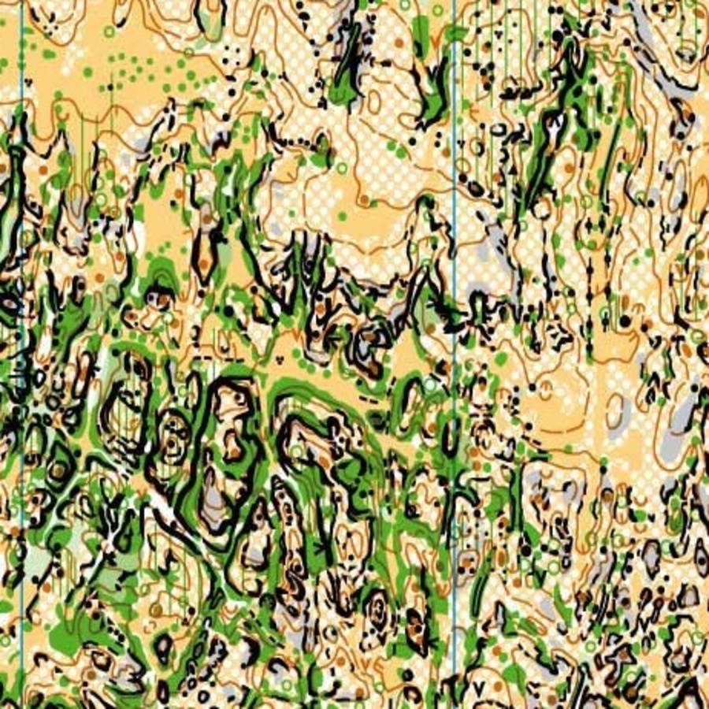
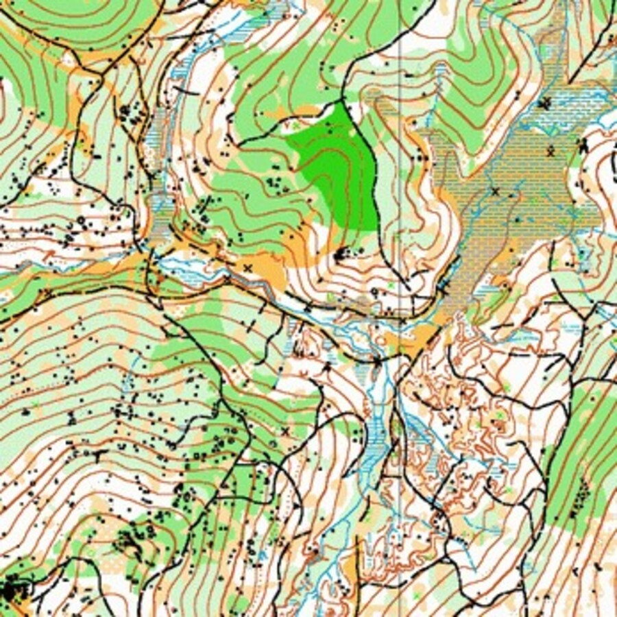
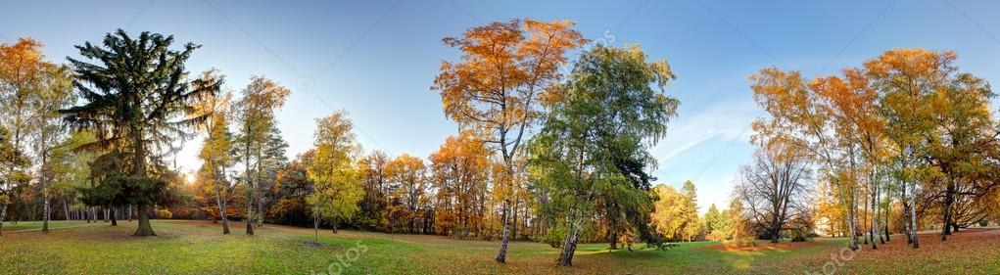

A sportoláson kívül nagy hangsúly van szervezési feladatokon is. A legtöbb sporttal ellentétben a versenyeket itt legtöbbször nem a szövetség, hanem egy adott egyesület szervezi meg, ami nagyon sok munkával jár. De nem csak ilyenkor van igény a segítségre...
2017-ben kaptam meg ezt a munkakört, ami egyesületi szinten végzendő. A versenyekre való jelentkezés az úgynevezett entryn keresztül történik, ide kell felvinnem az adott versenyeknél az egyesületből nevezettek adatait. Ehhez a jelentkezők listáját is be kell gyűjteni, az adatokat kezelni, olykor szállást, étkezést intézni és a váratlan helyzeteket kezelni. Továbbá a csapatvezető szerepét is magába foglalja ez a munkakör, ami a verseny helyszínén való intézkedésekkel is jár. Illetve utófeladatokkal is, mely főleg az elszámolást takarja.
2019-ben elvégeztem egy képzést a magyar cserkész szövetség keretein belül, mely úgy gondolom nagy segítséget nyújtott, hogy precízebben tudjam végezni ezeket a feladatokat is. Ez egy úgynevezett operatív képzés volt, mely főleg logisztikai, háttérfeladatok ellátását fejlesztette. A képzés alatt véleményem szerint emberileg és hozzáállás terén is sokat fejlődtem, ami által bár mág ha sokszor teher is ez a feladat, könnyebben el tudom végezni a munkát.
A versenyre való jelentkeztetést követően hamar bekerültem a saját rendezésű versenyek rendezői gárdájába is. Kisebbként még csak kisebb feladatokat kaptam, de mára itt is komyolyabb feladatokkal látnak el engem. A legtöbbször a helyszíni nevezéseket intézem néhány klubtársammal együtt, mely komoly felelőség teljes feladat. Természetesen a helyszínen mindig adódnak váratlan, plusz feladatok, ilyenkor igyekszem résen lenni és ahol csak tudok segíteni.
Egyesületünkben 2018-ban kezdődött el a mentor program. Célja a kisebb, lelkes, tehetséges futók fejlődésének a támogatása. Annak idején két klubtársat kaptam erre a feladatra, akikkel szerencsére könnyen megtaláltuk az összhangot, így minden nehézségek nélkül tud zajlani ez a tevékenység is. Sajnos egyikőjük mára abba hagyta a tájfutást, de helyette kaptam egy másik nagyon lelkes mentoráltat.
A Tabáni Spartacus Sport és Környezetvédő egyesület nem csak 2012 óta Magyarország legsikeresebb tájfutó klubja, hanem a többi egyesület közül is az egyik, aki a közösségéről is híres. Viszont a kapcsolatokat folyamatosan ápolni kell, így néhány edzőtársammal vállatuk azt a feladatot, hogy programokat szervezünk. Célunk főleg a korosztályok közötti kapcsolat építés volt. Kirándulásokat, edzéseken kívüli közös futásokat, játék esteket és egyéb eseményeket szoktunk szervezni.
A jövőben több nagyobb versenyt is rendezünk, így már most el vagyunk látva a feladatokkal. Most kezdtünk el készülődni a 2021-ben Velencénél megrendezendő szenior világbajnokságra, illetve 2024-ben is lesz egy nemzetközi versenyünk, a felnőtt európa bajnokság. Mindkettőnél a szervező bizottság tagja lettem.
